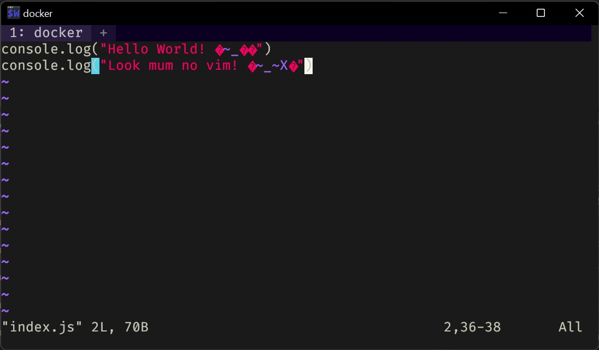

Previous slide Next slide Toggle fullscreen Open presenter view
Lies!
joshua@diplodocus:~$ which node
/home/joshua/.nvm/versions/node/v16.13.0/bin/node
joshua@diplodocus:~$ ldd /home/joshua/.nvm/versions/node/v16.13.0/bin/node
linux-vdso.so.1 (0x00007ffc5b77a000)
libdl.so.2 => /lib/x86_64-linux-gnu/libdl.so.2 (0x00007fc070dc8000)
libstdc++.so.6 => /lib/x86_64-linux-gnu/libstdc++.so.6 (0x00007fc070be7000)
libm.so.6 => /lib/x86_64-linux-gnu/libm.so.6 (0x00007fc070a98000)
libgcc_s.so.1 => /lib/x86_64-linux-gnu/libgcc_s.so.1 (0x00007fc070a7d000)
libpthread.so.0 => /lib/x86_64-linux-gnu/libpthread.so.0 (0x00007fc070a5a000)
libc.so.6 => /lib/x86_64-linux-gnu/libc.so.6 (0x00007fc070868000)
/lib64/ld-linux-x86-64.so.2 (0x00007fc070de1000)
Winblows?
C:\Users\Joshua>dumpbin /nologo /dependents "C:\Program Files\nodejs\node.exe"
Dump of file C:\Program Files\nodejs\node.exe
File Type : EXECUTABLE IMAGE
Image has the following dependencies:
dbghelp.dll
WS2_32.dll
IPHLPAPI.DLL
PSAPI.DLL
USERENV.dll
ADVAPI32.dll
USER32.dll
CRYPT32.dll
bcrypt.dll
KERNEL32.dll
WINMM.dll
The promise of Docker
Consistent runtime
Tools for developers
Interoperable format (Docker Image)
Self documenting (Dockerfile)
Easy* to use APIs (CLI, HTTP API)
Widely adopted
Kubernetes
GitHub Actions
EKS, AKS, GKE
$ node --version
v16.13.0
$ docker run --rm node --version
v17.1.0
$ docker run --rm node:latest --version
v17.1.0
$ docker run --rm node:16.13.0 --version
v16.13.0
$ docker run --rm node which node
/usr/local /bin/node
$ docker run --rm node ldd /usr/local /bin/node
linux-vdso.so.1 (0x00007ffe80b9c000)
libdl.so.2 => /lib/x86_64-linux-gnu/libdl.so.2 (0x00007f32df703000)
libstdc++.so.6 => /usr/lib/x86_64-linux-gnu/libstdc++.so.6 (0x00007f32df536000)
libm.so.6 => /lib/x86_64-linux-gnu/libm.so.6 (0x00007f32df3f2000)
libgcc_s.so.1 => /lib/x86_64-linux-gnu/libgcc_s.so.1 (0x00007f32df3d8000)
libpthread.so.0 => /lib/x86_64-linux-gnu/libpthread.so.0 (0x00007f32df3b6000)
libc.so.6 => /lib/x86_64-linux-gnu/libc.so.6 (0x00007f32df1f1000)
/lib64/ld-linux-x86-64.so.2 (0x00007f32df713000
$ docker run \
--rm \
--interactive \
--tty \
--workdir ~ \
--name dev \
node \
bash
root@f6513673f9f6:/home/joshua
total 8.0K
drwxr-xr-x 2 root root 4.0K Nov 25 18:10 .
drwxr-xr-x 1 root root 4.0K Nov 25 18:10 ..
root@f6513673f9f6:/home/joshua
bash: vim: command not found
root@f6513673f9f6:/home/joshua
root@f6513673f9f6:/home/joshua
root@f6513673f9f6:/home/joshua/todo
root@f6513673f9f6:/home/joshua/todo
root@f6513673f9f6:/home/joshua/todo
root@f6513673f9f6:/home/joshua/todo
Hello World!
root@f6513673f9f6:/home/joshua/todo
root@f6513673f9f6:/home/joshua/todo
root@f6513673f9f6:/home/joshua/todo

root@f6513673f9f6:/home/joshua/todo
$ docker ps
CONTAINER ID IMAGE COMMAND CREATED STATUS PORTS NAMES
f6513673f9f6 node "docker-entrypoint.s…" 13 minutes ago Up 13 minutes dev
$ docker cp dev:/home/joshua/todo .
$ tree
.
└── todo
├── index.js
└── package.json
1 directory, 2 files
$ code todo
$ tree .
.
└── todo
├── package.json
└── src
└── main.js
2 directories, 2 files
$ cat todo/src/main.js
console.log('I hate index.js files );
$ cat todo/package.json
{
"name" : "todo" ,
"version" : "1.0.0" ,
"main" : "src/main.js" ,
"license" : "MIT" ,
"scripts" : {
"start" : "node ."
}
}
$ docker cp ./todo dev:/home/joshua
$ docker attach dev
root@f6513673f9f6:/home/joshua/todo
total 20K
drwxr-xr-x 3 node node 4.0K Nov 25 19:09 .
drwxr-xr-x 3 root root 4.0K Nov 25 18:31 ..
-rw-r--r-- 1 node node 106 Nov 25 18:50 index.js
-rw-r--r-- 1 node node 96 Nov 25 19:06 package.json
drwxr-xr-x 2 node node 4.0K Nov 25 19:07 src
root@f6513673f9f6:/home/joshua/todo
root@f6513673f9f6:/home/joshua/todo
I hate index.js files
$ pwd
/home/joshua/projects/joshua-barnett/docker-for-development/todo
$ docker run --rm --interactive --tty --workdir /srv/todo --name dev \
--mount type =bind ,source =`pwd `,target=/srv/todo \
node \
bash
root@c9d70c16b644:/srv/todo
package.json src
Only difference between them is --mount will throw an error if the host directory does not exist.
Whereas --volume will stub a missing host directory for you.
$ wget -q --show-progress \
https://releases.ubuntu.com/20.04.3/ubuntu-20.04.3-desktop-amd64.iso
ubuntu-20.04.3-desktop 5%[=> ] 157.30M 44.7MB/s eta 64s
root@c9d70c16b644:/srv/todo
https://releases.ubuntu.com/20.04.3/ubuntu-20.04.3-desktop-amd64.iso
ubuntu-20.04.3-desktop 5%[=> ] 150.88M 5.11MB/s eta 9m 12s
root@c9d70c16b644:/tmp
https://releases.ubuntu.com/20.04.3/ubuntu-20.04.3-desktop-amd64.iso
ubuntu-20.04.3-desktop 5%[> ] 161.04M 40.6MB/s eta 69s
$ wget -q --show-progress \
https://releases.ubuntu.com/20.04.3/ubuntu-20.04.3-desktop-amd64.iso
ubuntu-20.04.3-desktop 5%[=> ] 159.04M 45.1MB/s eta 63s
root@9e3d5e4532e2:/srv/todo
https://releases.ubuntu.com/20.04.3/ubuntu-20.04.3-desktop-amd64.iso
ubuntu-20.04.3-desktop 5%[=> ] 160.96M 43.0MB/s eta 67s
root@9e3d5e4532e2:/tmp
https://releases.ubuntu.com/20.04.3/ubuntu-20.04.3-desktop-amd64.iso
ubuntu-20.04.3-desktop 5%[=> ] 160.21M 45.4MB/s eta 63s
# bind mount (Fast!
$ time yarn install --frozen-lockfile
# -- snip ---
96% cpu
50.398 total
# bind mount (8x Slower!
root@6001c575a574:/srv/awesome-todo# time yarn install --frozen-lockfile
# -- snip --
Done in 402.74s.
real 6m43.053s
user 1m15.429s
sys 1m10.757s
# Size on disk
root@6001c575a574:/srv/awesome-todo# du -sh node_modules packages/*/node_modules
370M node_modules
0 packages/client/node_modules
0 packages/server/node_modules
node_modules?
Use
Not very inclusive
Install node_modules outside of the bind mount directory
node_modules inaccessible from the host
Parent directory inside the container
yarn install --frozen-lockfile --modules-folder ../node_modules
Symlink to path outside of project directory
node_modules -> /tmp/node_modules
Use a persistent Docker volume
If you want to use cached node_modules from an existing Docker image
bind mounts
Backing up, restoring, migrating data
Intermediate file storage
Native file system behaviour
High performance I/O
e.g. Database directories
Manage data in Docker
$ docker run \
--rm \
--detach \
--volume my_db_data_volume:/data/db \
--name my_db \
mongo
$ docker ps
CONTAINER ID IMAGE COMMAND CREATED STATUS PORTS NAMES
a277c6f52683 mongo "docker-entrypoint.s…" 3 minutes ago Up 3 minutes 27017/tcp my_db
$ docker exec --interactive --tty my_db mongo
> use todo
switched to db todo
> db.items.insert({"description" : "Task" , "done" : false })
WriteResult({ "nInserted" : 1 })
> exit
$ docker rm --force my_db
my_db
$ docker ps --all
CONTAINER ID IMAGE COMMAND CREATED STATUS PORTS NAMES
$ docker volume ls
DRIVER VOLUME NAME
local my_db_data_volume
$ docker run \
--rm \
--detach \
--volume my_db_data_volume:/data/db \
--name my_db \
--publish 27017:27017 \
mongo
$ docker exec my_db \
mongo todo --quiet --eval 'db.items.find().forEach(printjson)'
{
"_id" : ObjectId("61a27159b08ff2c5624a9bba" ),
"description" : "Task" ,
"done" : false
}
$ docker inspect my_db | jq '.[].NetworkSettings.Networks'
{
"bridge" : {
"IPAMConfig" : null ,
"Links" : null ,
"Aliases" : null ,
"NetworkID" : "f56f0ebff9c02f8c81a2cb4983740d70eae5f79968c49f282d3641a9fdea353e" ,
"EndpointID" : "4111d8d341b634e8851d5a37fe06773e37930e7d5dcd9d5ab1f075803f0e6838" ,
"Gateway" : "172.17.0.1" ,
"IPAddress" : "172.17.0.2" ,
"IPPrefixLen" : 16 ,
"IPv6Gateway" : "" ,
"GlobalIPv6Address" : "" ,
"GlobalIPv6PrefixLen" : 0 ,
"MacAddress" : "02:42:ac:11:00:02" ,
"DriverOpts" : null
}
}
$ docker run --rm --name my_client --interactive --tty mongo bash
root@63dcb850b14f:/
Error: could not connect to server 127.0.0.1:27017, connection attempt failed: SocketException:
Error connecting to 127.0.0.1:27017 :: caused by :: Connection refused :
connect@src/mongo/shell/mongo.js:372:17
@(connect):3:6
exception: connect failed
exiting with code 1
root@63dcb850b14f:/
{
"_id" : ObjectId("61a2763c923c19ee6b178a5a" ),
"description" : "Task" ,
"done" : false
}
Use --network <name> to create a user defined bridge network.
User-defined bridges provide automatic DNS resolution between containers.
User-defined bridges provide better isolation.
Containers can be attached and detached from user-defined networks on the fly.
# Create a user defined bridge network
$ docker network create my_network
ec58fc0d1375c280e609adc5086fd67697f55a8a3bfbde69eaaff65d9035a1ad
$ docker network ls
docker network ls
NETWORK ID NAME DRIVER SCOPE
f56f0ebff9c0 bridge bridge local
3aaf4000c115 host host local
ec58fc0d1375 my_network bridge local
# Recreate database container with '--network'
docker run --rm --detach --volume my_db_data_volume:/data/db --name my_db --publish 27017:27017 \
--network my_network \ #
# Recreate client container with '--network'
docker run --rm --name my_client --interactive --tty \
--network my_network \ #
# Install dig for DNS querying
root@924e075a1b8c:/# apt update && apt install --yes dnsutils
# Query database container name 'my_db'
root@924e075a1b8c:/# dig +short my_db
172.19.0.2
#
awesome-todo
Database
Backend application
fastify - Web frameworkmongoose - Data modelsgraphql - API Schemamercurius - GraphQL API
Frontend application
create-react-app - Frontend boilerplatestyled-components - Minor styling tweaks@apollo/client - GraphQL client
Vague...
Which version of Node.js?
Which version of Yarn?
Which version of MongoDB?
Not very future proof
Will these steps still work
What if port 3001 is taken?
Cross platform?
...works on my machine
awesome-todo
root@6de80090a66a:/srv/awesome-todo
root
root@6de80090a66a:/srv/awesome-todo
root:x:0:0:root:/root:/bin/bash
root@6de80090a66a:/srv/awesome-todo
root@6de80090a66a:/srv/awesome-todo
-rw-r--r-- 1 root root 0 Nov 28 18:43 cant-touch-this
$ ls -lh
total 604K
-rw-r--r-- 1 root root 0 Nov 28 18:45 cant-touch-this
-rw-r--r-- 1 joshua joshua 468 Nov 28 18:13 package.json
drwxr-xr-x 5 joshua joshua 4.0K Nov 28 17:55 packages
-rw-r--r-- 1 joshua joshua 1.3K Nov 27 16:44 README.md
-rw-r--r-- 1 joshua joshua 589K Nov 28 18:23 yarn.lock
$ cat /etc/passwd | grep root
root:x:0:0:root:/root:/bin/bash
$ cat /etc/passwd | grep joshua
joshua:x:1000:1000:,,,:/home/joshua:/usr/bin/zsh
root@6de80090a66a:/srv/awesome-todo
node:x:1000:1000::/home/node:/bin/bash
--user
$ docker run \
--rm \
--interactive \
--tty \
--workdir /srv/awesome-todo \
--volume `pwd `:/srv/awesome-todo \
--user node \
node:16.13.0 \
bash
node@b48146bd2871:/srv/awesome-todo$ touch can-touch-this
node@b48146bd2871:/srv/awesome-todo$ ls -lh can-touch-this
-rw-r--r-- 1 node node 0 Nov 28 18:54 can-touch-this
$ ls -lh can-touch-this
-rw-r--r-- 1 joshua joshua 0 Nov 28 18:54 can-touch-this
node_modules
node@b48146bd2871:/srv/awesome-todo$ echo '--modules-folder /tmp/awesome-todo/node_modules' > .yarnrc
node@b48146bd2871:/srv/awesome-todo$ yarn server
yarn run v1.22.15
$ yarn workspace @awesome-todo/server start
$ fastify start -d -w -l info -P src/app.mjs
/bin/sh: 1: fastify: not found
node@b48146bd2871:/srv/awesome-todo$ yarn server
yarn run v1.22.15
$ yarn workspace @awesome-todo/server start
$ echo ${PATH} | sed s/:/\\n/g | grep awesome-todo
/srv/awesome-todo/packages/server/tmp/awesome-todo/node_modules/.bin
/home/node/.config/yarn/link/tmp/awesome-todo/node_modules/.bin
/srv/awesome-todo/tmp/awesome-todo/node_modules/.bin
/srv/awesome-todo/tmp/awesome-todo/node_modules/.bin
/home/node/.config/yarn/link/tmp/awesome-todo/node_modules/.bin
/srv/awesome-todo/tmp/awesome-todo/node_modules/.bin
Done in 0.52s.
node@b48146bd2871:/srv/awesome-todo$ export PATH="${PATH} :/tmp/awesome-todo/node_modules/.bin"
node@b48146bd2871:/srv/awesome-todo$ yarn server
yarn run v1.22.15
$ yarn workspace @awesome-todo/server start
$ fastify start -d -w -l info -P src/app.mjs
Error [ERR_MODULE_NOT_FOUND]: Cannot find package 'config' imported from /srv/awesome-todo/packages/server/src/app.mjs
node@b48146bd2871:/srv/awesome-todo$ ln -s /tmp/awesome-todo/node_modules
node@b48146bd2871:/srv/awesome-todo$ yarn server
yarn run v1.22.15
$ yarn workspace @awesome-todo/server start
$ fastify start -d -w -l info -P src/app.mjs
Debugger listening on ws://0.0.0.0:9320/3867d4ef-3eb9-4f38-a781-e8f6eee92592
For help , see: https://nodejs.org/en/docs/inspector
node@b48146bd2871:/srv/awesome-todo$ yarn workspace @awesome-todo/server add --dev prettier
success Saved lockfile.
success Saved 1 new dependency.
info Direct dependencies
info All dependencies
└─ prettier@2.5.0
Done in 8.43s.
Done in 8.72s.
node@b48146bd2871:/srv/awesome-todo$ cat packages/server/package.json | grep lint
"lint" : "prettier --check config src test" ,
node@b48146bd2871:/srv/awesome-todo$ yarn workspace @awesome-todo/server lint
yarn workspace v1.22.15
yarn run v1.22.15
$ prettier --check config src test
Checking formatting...
All matched files use Prettier code style!
Done in 1.03s.
Done in 1.33s.
Dockerfile
We have made changes the development environment we want to share
Installed dependencies /tmp/awesome-todo/node_modules
Changed the PATH variable
Lets document and automate these changes by providing a Dockerfile
ARG NODE_VERSION="16.13.0"
FROM node:${NODE_VERSION} AS base
FROM base AS install
ARG PROJECT="awesome-todo"
WORKDIR /srv/${PROJECT}
COPY package.json yarn.lock .yarnrc ./
COPY packages/server/package.json packages/server/
COPY packages/client/package.json packages/client/
COPY packages/shared/package.json packages/shared/
RUN yarn install --frozen-lockfile
FROM base AS dev
ARG PROJECT="awesome-todo"
COPY --from=install /tmp/${PROJECT} /node_modules /tmp/${PROJECT} /node_modules
ENV PATH="${PATH}:/tmp/${PROJECT}/node_modules/.bin"
$ export DOCKER_BUILDKIT=1
$ docker build --tag awesome-todo/dev --target node_modules .
Successfully built afdf832b7e20
Successfully tagged awesome-todo/dev:latest
$ docker image ls awesome-todo/dev
REPOSITORY TAG IMAGE ID CREATED SIZE
awesome-todo/dev latest 5c404aa9d660 4 minutes ago 1.17GB
$ docker build --tag awesome-todo/dev/slim --target node_modules --build-arg NODE_VERSION=16.13.0-slim .
$ docker image ls awesome-todo/dev/slim
REPOSITORY TAG IMAGE ID CREATED SIZE
awesome-todo/dev/slim latest 387425ea14b8 2 minutes ago 444MB
$ docker build --tag awesome-todo/dev/alpine --target node_modules --build-arg NODE_VERSION=16.13.0-alpine .
$ docker image ls awesome-todo/dev/alpine
REPOSITORY TAG IMAGE ID CREATED SIZE
awesome-todo/dev/alpine latest 283748b68275 49 seconds ago 380MB
$ docker run \
--rm \
--interactive \
--tty \
--workdir /srv/awesome-todo \
--volume `pwd `:/srv/awesome-todo \
--user node \
awesome-todo/dev/alpine \
yarn server
yarn run v1.22.15
$ yarn workspace @awesome-todo/server start
$ fastify start -d -w -l info -P src/app.mjs
Debugger listening on ws://0.0.0.0:9320/c3b7b8e9-a248-4c5f-896c-a8111468a369
For help , see: https://nodejs.org/en/docs/inspector
$ docker run \
--rm \
--interactive \
--tty \
--workdir /srv/awesome-todo \
--volume `pwd `:/srv/awesome-todo \
--user node \
awesome-todo/dev/alpine \
yarn client
Compiled successfully!
You can now view @awesome-todo/client in the browser.
Local: http://localhost:3001
On Your Network: http://172.17.0.3:3001
Note that the development build is not optimized.
To create a production build, use npm run build.
docker-compose.yamlversion: '3.8'
services:
client:
build:
args:
NODE_VERSION: 16.13 .0 -alpine
image: awesome-todo/dev/alpine
working_dir: /srv/awesome-todo
tty: true
stdin_open: true
volumes:
- .:/srv/awesome-todo
command: yarn client
version: '3.8'
services:
client:
build:
args:
NODE_VERSION: 16.13 .0 -alpine
image: awesome-todo/dev/alpine
working_dir: /srv/awesome-todo
tty: true
stdin_open: true
volumes:
- .:/srv/awesome-todo
command: yarn client
server:
build:
args:
NODE_VERSION: 16.13 .0 -alpine
image: awesome-todo/dev/alpine
working_dir: /srv/awesome-todo
tty: true
stdin_open: true
volumes:
- .:/srv/awesome-todo
command: yarn server
version: '3.8'
x-monorepo:
&monorepo
build:
args:
NODE_VERSION: 16.13 .0 -alpine
image: awesome-todo/dev/alpine
working_dir: /srv/awesome-todo
tty: true
stdin_open: true
volumes:
- .:/srv/awesome-todo
services:
client:
<< : *monorepo
command: yarn client
server:
<< : *monorepo
command: yarn server
version: '3.8'
x-monorepo:
&monorepo
build:
args:
NODE_VERSION: 16.13 .0 -alpine
image: awesome-todo/dev/alpine
working_dir: ${WORKDIR}
tty: true
stdin_open: true
volumes:
- .:${WORKDIR}
services:
client:
<< : *monorepo
command: yarn client
server:
<< : *monorepo
command: yarn server
Makefileexport WORKDIR = /srv/todo
export CLIENT_PORT = 3001
export SERVER_PORT = 3000
export MONGO_PORT = 27017
export IMAGE_TAG = awesome-todo/dev/alpine
export NODE_VERSION = 16.13.0-alpine
up:
docker compose up $(SERVICE)
down:
docker compose down
version: '3.8'
x-monorepo:
&monorepo
build:
args:
NODE_VERSION: ${NODE_VERSION}
image: ${IMAGE_TAG}
working_dir: ${WORKDIR}
tty: true
stdin_open: true
volumes:
- .:${WORKDIR}
services:
database:
image: mongo:5.0.4
volumes:
- mongo_data_db:/data/db
ports:
- ${MONGO_PORT}:27017
server:
<< : *monorepo
command: yarn server
environment:
MONGO_URI: mongodb://database:27017/todo
ports:
- ${SERVER_PORT}:3000
client:
<< : *monorepo
command: yarn client
ports:
- ${CLIENT_PORT}:3000
volumes:
mongo_data_db:
name: Awesome TODO CI
on:
pull_request: ~
push:
branches:
- master
- develop
env:
DOCKER_USERNAME: ${{ github.actor }}
DOCKER_PASSWORD: ${{ secrets.GITHUB_TOKEN }}
jobs:
lint:
name: Lint
runs-on: ubuntu-20.04
steps:
- name: Checkout source code
uses: actions/checkout@v2
- name: Login
run: make login
- name: Lint
run: make lint
- name: Push
run: make push
make lint
docker compose run --rm server yarn lint
[+] Running 2/1
⠿ Network awesome-todo_default Created 0.4s
⠿ Volume "awesome-todo_mongo_data_db" Created 0.0s
[+] Running 6/6
⠿ server Pulled 11.7s
⠿ 97518928ae5f Already exists 0.0s
⠿ 784cd1fd612b Already exists 0.0s
⠿ 0ec5d186b713 Already exists 0.0s
⠿ 98dc27ad6276 Already exists 0.0s
⠿ d6532878b3da Pull complete 9.9s
[+] Building 0.2s (14/14) FINISHED
=> [internal] load build definition from Dockerfile 0.1s
=> => transferring dockerfile: 785B 0.0s
=> [internal] load .dockerignore 0.1s
=> => transferring context: 53B 0.0s
=> [internal] load metadata for docker.io/library/node:16.13.0-alpine 0.0s
=> [base 1/1] FROM docker.io/library/node:16.13.0-alpine 0.0s
=> [internal] load build context 0.1s
=> => transferring context: 605.57kB 0.0s
=> CACHED [install 1/6] WORKDIR /srv/awesome-todo 0.0s
=> CACHED [install 2/6] COPY package.json yarn.lock .yarnrc ./ 0.0s
=> CACHED [install 3/6] COPY packages/server/package.json packages/server/ 0.0s
=> CACHED [install 4/6] COPY packages/client/package.json packages/client/ 0.0s
=> CACHED [install 5/6] COPY packages/shared/package.json packages/shared/ 0.0s
=> CACHED [install 6/6] RUN yarn install --frozen-lockfile 0.0s
=> CACHED [dev 1/1] COPY --from=install /tmp/awesome-todo/node_modules /tmp/awesome-todo/node_modules 0.0s
=> exporting to image 0.0s
=> => exporting layers 0.0s
=> => writing image sha256:12eb9c609df4ebb4612e256edfcdb4b88ab8fa0b8d72e9f1170313ef1abcb81b 0.0s
=> => naming to docker.pkg.github.com/joshua-barnett/awesome-todo/dev 0.0s
=> exporting cache 0.0s
=> => preparing build cache for export 0.0s
Use 'docker scan' to run Snyk tests against images to find vulnerabilities and learn how to fix them
yarn run v1.22.15
$ yarn workspaces run lint
> @awesome-todo/client
$ prettier --check public src
Checking formatting...
All matched files use Prettier code style!
> @awesome-todo/server
$ prettier --check config src test
Checking formatting...
All matched files use Prettier code style!
> @awesome-todo/shared
$ prettier --check src
Checking formatting...
All matched files use Prettier code style!
Done in 4.57s.
make up
docker compose up --detach
[+] Running 3/3
⠿ client Pulled 1.9s
⠿ database Pulled 1.6s
⠿ server Pulled 2.6s
[+] Building 0.2s (14/14) FINISHED
=> [internal] load build definition from Dockerfile 0.1s
=> => transferring dockerfile: 785B 0.0s
=> [internal] load .dockerignore 0.1s
=> => transferring context: 53B 0.0s
=> [internal] load metadata for docker.io/library/node:16.13.0-alpine 0.0s
=> [internal] load build context 0.1s
=> => transferring context: 605.57kB 0.0s
=> [base 1/1] FROM docker.io/library/node:16.13.0-alpine 0.0s
=> CACHED [install 1/6] WORKDIR /srv/awesome-todo 0.0s
=> CACHED [install 2/6] COPY package.json yarn.lock .yarnrc ./ 0.0s
=> CACHED [install 3/6] COPY packages/server/package.json packages/server/ 0.0s
=> CACHED [install 4/6] COPY packages/client/package.json packages/client/ 0.0s
=> CACHED [install 5/6] COPY packages/shared/package.json packages/shared/ 0.0s
=> CACHED [install 6/6] RUN yarn install --frozen-lockfile 0.0s
=> CACHED [dev 1/1] COPY --from=install /tmp/awesome-todo/node_modules /tmp/awesome-todo/node_modules 0.0s
=> exporting to image 0.0s
=> => exporting layers 0.0s
=> => writing image sha256:12eb9c609df4ebb4612e256edfcdb4b88ab8fa0b8d72e9f1170313ef1abcb81b 0.0s
=> => naming to docker.pkg.github.com/joshua-barnett/awesome-todo/dev 0.0s
=> exporting cache 0.0s
=> => preparing build cache for export 0.0s
[+] Running 5/5
⠿ Network awesome-todo_default Created 0.0s
⠿ Volume "awesome-todo_mongo_data_db" Created 0.0s
⠿ Container awesome-todo-database-1 Started 1.2s
⠿ Container awesome-todo-server-1 Started 1.2s
⠿ Container awesome-todo-client-1 Started 1.0s
Welcome to my presentation on 'Docker for development'
But first.
Let's cover why you might want to use Docker for your development environment.
Recently I went to a conference in Seattle and a I met a bunch of interesting people.
One person I met had developed a "cross platform" 2D game library, with basic examples and everything.
While at the airport I had a spare moment so I thought I'll download it, build it and run one of the examples.
So this is his documentation which I followed.
Once I had all the dependencies installed.
I ran the build script, and it compiled successfully (ignoring a few compiler warnings).
When it comes to running an example, you'll see it fails with a relatively informative error about failing to create a window.
So this is not a great experience as a developer.
Especially once who has not experience of the project.
I know a bit of C/C++ and maybe a bit of CMake, but do I know enough about GLFW to immediately know how to to fix this issue?
No!
Looking at this you might be thinking.
Well serves you right for using C.
This is why interpretted languages and JIT compilers exist.
So I can write once and run everywhere.
So given most things have some dependency or another on the operating system.
How do we solve this issue in a way where we do not have to worry about the environment we are running in.
I was going to go into more detail here about how you can access the Docker VM directly.
Explain a bit about how OverlayFS works, and other parts of how it is implemented on different platforms.
However, I don't think I've got enough time for that.
So I'll wave it away as magic for now.
But here's an article explaining a bit more about how it works.
Turns out sync file systems isn't just about moving and syncing files.
If you want things like hot reload to work you will also need to propagate and communicate file events between systems, so it gets quite complicated.
All your really need to know is bind mounts are great!
But you should pick when to use them wisely because they don't work great on all platforms and can be very slow in certain use cases.
Namely...
- Installation of node_modules
- Working directories for things like databases
```bash
$ docker inspect dev | jq '.[].GraphDriver.Data.MergedDir'
"/var/lib/docker/overlay2/100be0d438a58870743f604ae5fbe49f46a2b3d1a0cc02a7809171396fff1b10/merged"
# Enter Docker VM on macOS
$ nc -U ~/Library/Containers/com.docker.docker/Data/debug-shell.sock
# Inside Docker VM
$ cd /var/lib/docker/overlay2/100be0d438a58870743f604ae5fbe49f46a2b3d1a0cc02a7809171396fff1b10/merged
```
This problem with the bind mount implementation is exacerbated in I/O heavy use cases.
Such as database data directories and node_modules installation.
Now we could put this command in our readme in addition to the previous commands.
However, it would probably be a better user experience to put it in a shell script.